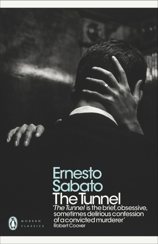
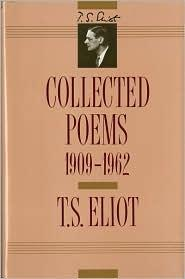
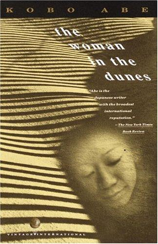
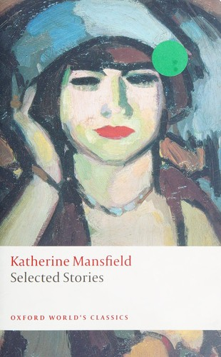

Year 1 — Junior Year (2026–2027)
Tentative and subject to change. Year 1 culminates in the Individual Oral in spring 2027 and the start of the HL Essay over summer.
Literary works studied this year (4 of 6)

Penguin Modern ClassicsThe Tunnel
4 weeks · ~150 pp.

Collected Poems 1909–1962Selected Poems (19)
~2 weeks

Vintage International, trans. E. Dale SaundersThe Woman in the Dunes
4 weeks

Oxford World’s ClassicsSelected Short Stories (6)
3 weeks
Combined texts, quarter by quarter
What to watch for in each quarter — the vocabulary to master, the genre moves to name, and the questions to hold while you read. Laid out as Cornell notes so you can mirror the format in your own notebook.
First, a definition: what is a field of inquiry?
A field of inquiry is one of five broad areas the IB uses to sort the big human questions that texts raise. Think of them as the five shelves any global issue can sit on:
- Culture, identity and community who belongs, who is excluded, and what identity costs
- Beliefs, values and education what a society holds true and passes on
- Politics, power and justice who has power, and how it is used or resisted
- Art, creativity and the imagination what art is for, and who decides
- Science, technology and the environment people, technology, and the natural world
A field is not your global issue — it is far too big for that. Your global issue is a narrow, arguable claim you carve out of a field: it must matter beyond one text, be visible in the text itself, and be provable in ten minutes.
Field: Politics, power and justice. Too broad: “racism in Othello.” A global issue: “how a society lets an outsider succeed while never letting him belong, so that his identity stays something others assign him.”
The Individual Oral opens by naming your field, then narrowing to your issue. Practise that move all year — see the ladder in the question banks.
Year 1 — Course Sequence
Junior Year · 2026–2027Readers, Writers, and Texts
Genre characteristics
- Confessional novella — a narrator writing from prison, controlling every fact we receive
- Narrative ballad — a singer-songwriter telling someone else’s life in first person
Hold these questions while you read
- Castel tells you he is a murderer in his first sentence. Why begin there? What does that opening buy him for the rest of the book?
- Mark every point where Castel addresses you directly. What is he asking you to do?
- Keep a running list of what Castel claims to know about María. Beside each item, note how he knows it. How much survives?
- In “Fast Car,” who is ‘you’? Does the same person stay in that position across all four verses?
- Both texts withhold names, dates, or places. Find three omissions. What does each one accomplish that stating the fact would not?
- Chapman’s narrator plans an escape; Castel narrates from a cell. Which of them is more trapped, and what in the text makes you say so?
Readers, Writers, and Texts
Genre characteristics
- Documentary photograph — a composed image presented as neutral record
- Modernist lyric — fragmented, allusive, refusing to resolve
- Science-fiction film — spectacle carrying an argument about survival
Hold these questions while you read
- For each Lange photograph: what is inside the frame, and what had to be cut away to make the picture work? Sketch what you think sits just outside it.
- Read each caption last. How much of what you thought you saw was installed by the words?
- In Eliot, mark every image of dust, ash, dryness or stone. What accumulates by the end?
- Eliot’s speaker changes without announcement. Find a place where it happens — how did you know?
- In Interstellar, what does the camera do at each emotional peak: move closer, hold, or look away? What does that choice argue?
- Lange and Eliot were working in the same two decades. What does each one notice about that period that the other cannot?
Time & Space
Genre characteristics
- Existentialist novel — a realistic surface over an allegorical structure
- Realist painting — an ordinary interior arranged to produce a feeling
Hold these questions while you read
- In each Hopper painting: where does the light come from, and what does it refuse to reach?
- Measure the distance between figures in Room in New York and Nighthawks. What fills that space?
- Track every time Niki plans to escape. What has changed between the first plan and the last?
- What can the sand do that a human antagonist could not?
- Find the sentence where the pit stops being a prison. Can you defend your choice?
- Both a painting and a novel put a person inside a container. Which medium makes you feel the confinement more — and what does the other one gain in exchange?
Intertextuality
Genre characteristics
- Modernist short story — a life compressed into a few pages and one moment of seeing
Hold these questions while you read
- Paragraph by paragraph, ask: whose sentence is this? The narrator’s, the character’s, or both at once?
- Mark the moment each story turns. How many sentences does the turn actually take?
- What does each woman believe about herself that the story quietly contradicts?
- List the class markers on the first page — objects, speech, clothing, food. How fast does Mansfield place someone socially?
- Which earlier Year 1 text does each story most resemble? Be able to defend the comparison in one sentence.
- Where does a story end a beat earlier than you expected? What does the withheld ending do?
Quarter by quarter — schedule
Readers, Writers, and Texts
Works & texts
- Introduction / course overview
- Novella: The Tunnel by Ernesto Sabato (PRL, Argentina)
- Music: Tracy Chapman, Tracy Chapman (1988)
Timing & notes
- Intro: 1–2 weeks
- Novella: 4 weeks (~150 pgs)
- Music: 3 weeks
Readers, Writers, and Texts
Works & texts
- Photography: Dorothea Lange (6 photographs, Non-Lit, U.S.)
- T. S. Eliot — Selected Poems (19 poems, 1911–1930) (PRL, U.S./UK)
- Film: Interstellar (Nolan, 2014)
Timing & notes
- Photographs: 3 weeks
- Eliot: ~2 weeks
- Film: 1–2 weeks
Time & Space
Works & texts
- Choice Work 2: The Woman in the Dunes by Kōbō Abe (Free choice, Japan)
- Art: Edward Hopper (6 paintings, Non-Lit, U.S.)
- IO outline & practice
Timing & notes
- Choice Work 2: 4 weeks
- Art: 2–3 weeks
- IO practice: 2 weeks
- IO outline due 1 March
Intertextuality
Works & texts
- Short stories (6): Katherine Mansfield (PRL, NZ/UK — free full text)
- IO assessment
- Begin work on the HL Essay (over summer)
Timing & notes
- Short stories: 3 weeks
- IO assessment: mid-March to mid-April 2027
- HL Essay begins: April–May 2027